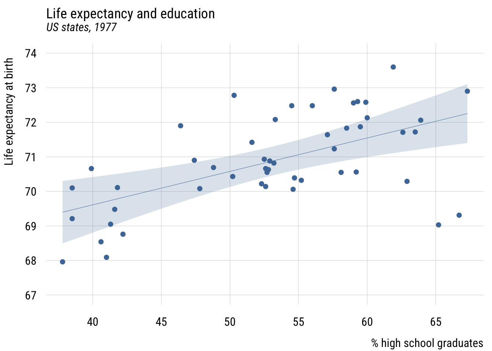
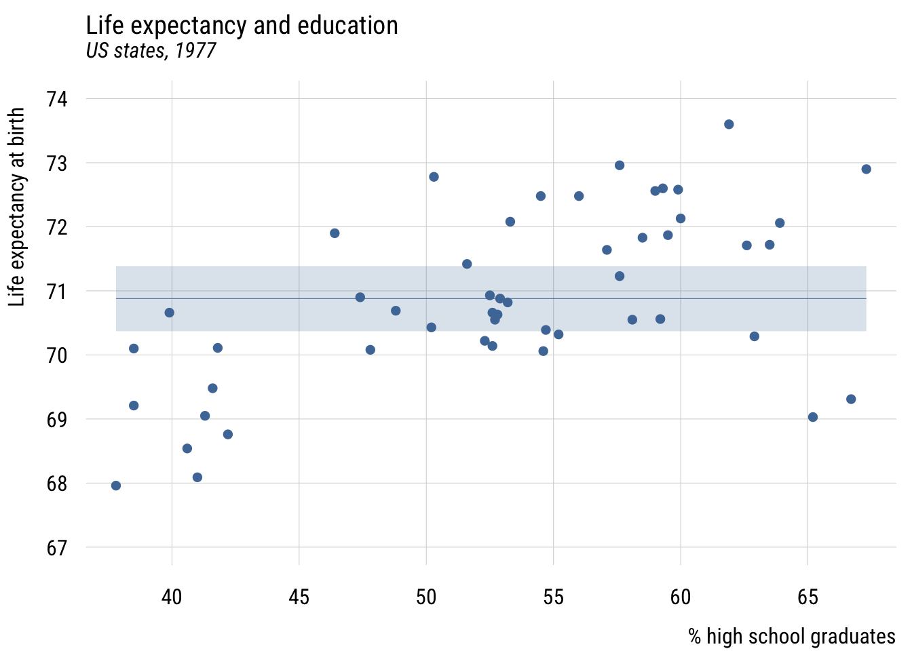
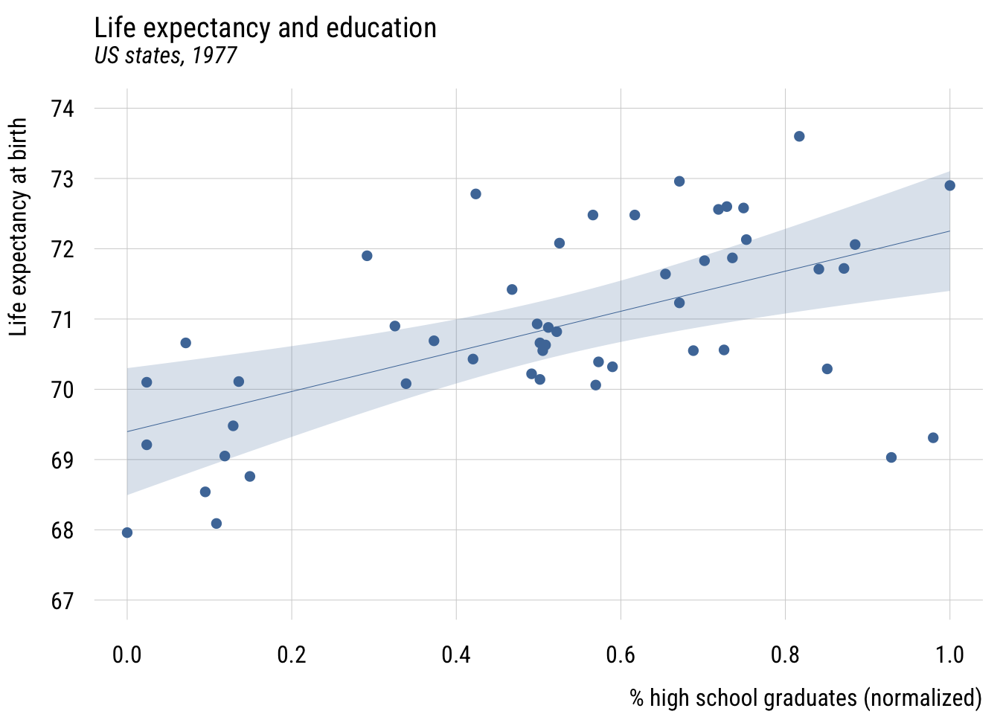
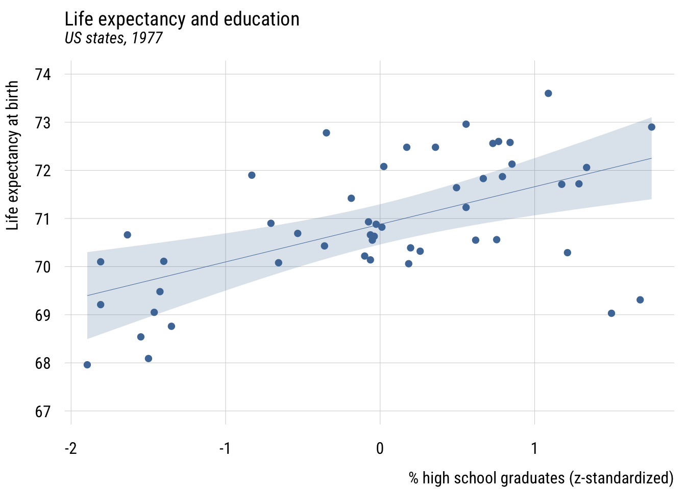
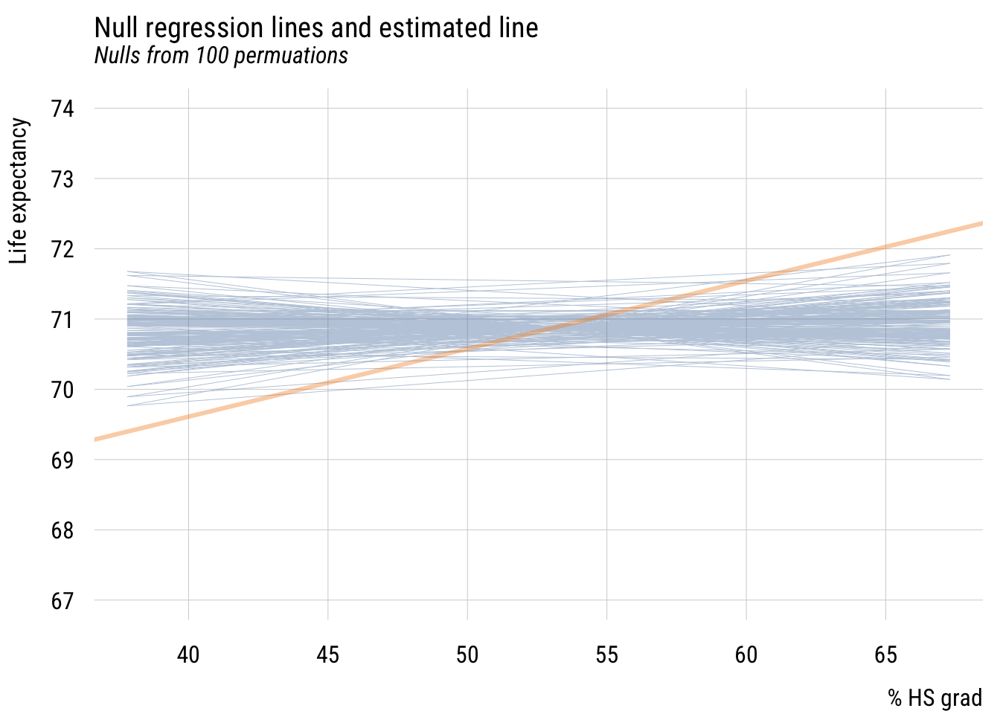
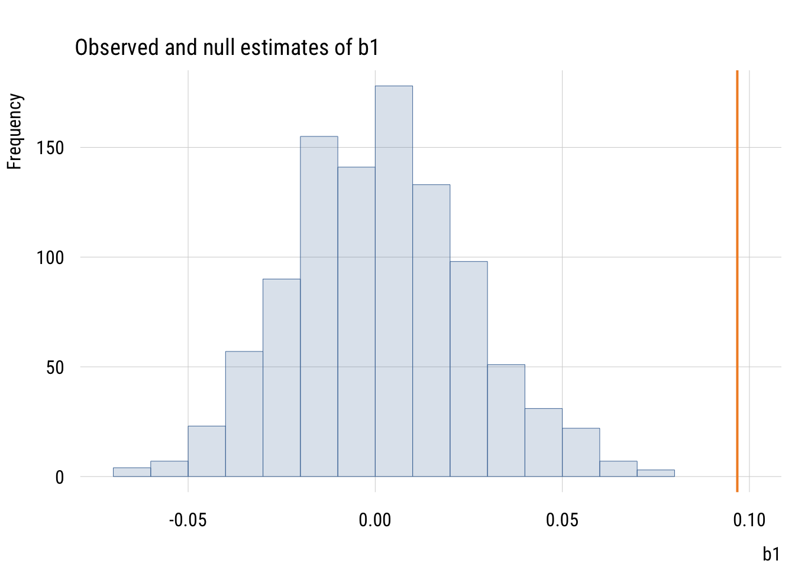
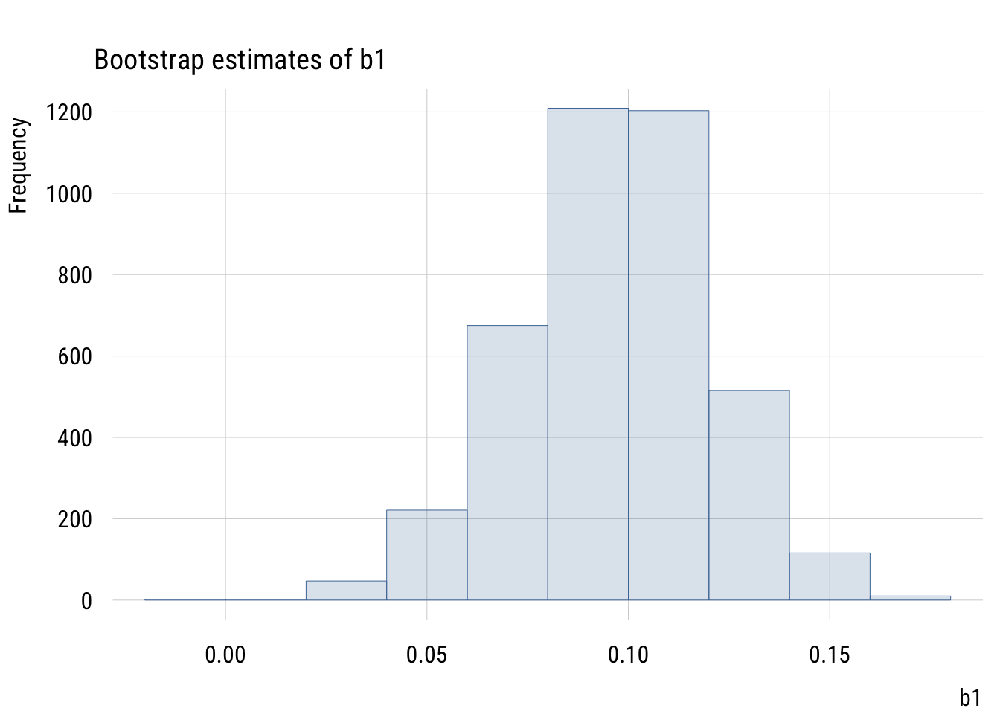
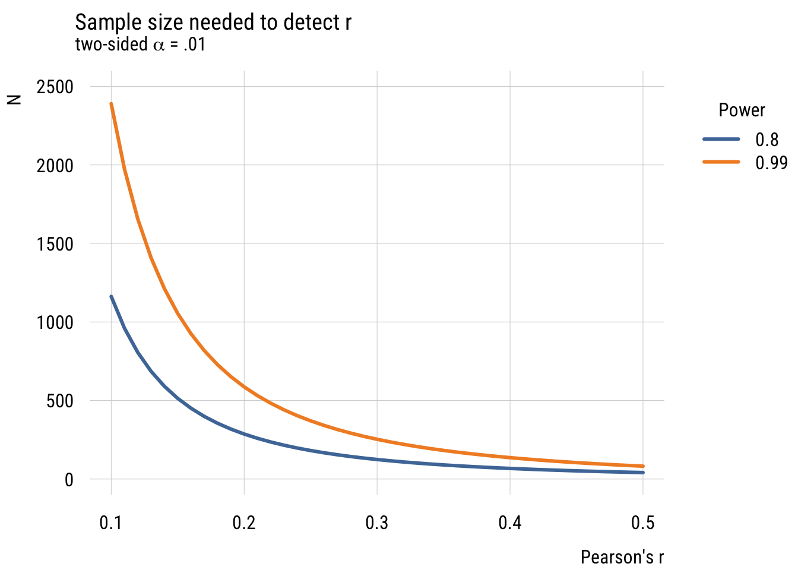

library(dplyr)
library(tidyr)
library(broom)
library(stringr)
library(modelsummary)
library(tinyplot)
tinytheme("ipsum",
family = "Roboto Condensed",
palette.qualitative = "Tableau 10",
palette.sequential = "agSunset")Chapter 6
Overview
Goals
This is our first step into a larger world (of regression analysis). Here, instead of comparing zero-parameter models (MC) to one-parameter models (MA), we’re going to compare one-parameter models (MC) to two-parameter models (MA). The basic question is whether we want to make the same prediction for every observation or different predictions for different observations, condition on their value of some predictor.
As before, we’ll augment the book by using simulations to understand null distributions, statistical inference, and power.
Set up
Here are the packages we’re going to need. We’ll also set our {tinyplot} theme.
Additional considerations
Before moving onto the chapter proper, I want to say a something about the t-test. The book really doesn’t properly talk about this until Chapter 9, but we’ve been skirting around it and talking about the t distribution already so I’d like to talk a little about this.
The t-test as a two-group lm() comparison*
Let’s look at Southern and non-Southern states in 1977 and compare them on income per capita.
state.x77_with_names <- as_tibble(state.x77,
rownames = "state")
states <- bind_cols(state.x77_with_names,
region = state.division) |> # both are in base R
janitor::clean_names() |> # lower case and underscore
mutate(south = as.integer( # make a south dummy
str_detect(as.character(region),
"South")))We can write:
\[\begin{align} &\text{Model C: } \text{LIFEEXP}_i = \beta_0 + \epsilon_i \\ &\text{Model A: } \text{LIFEEXP}_i = \beta_0 + \beta_1 (\text{SOUTH}_i) + \epsilon_i \end{align}\]
Estimate the models.
mc <- lm(life_exp ~ 1,
data = states)
ma <- lm(life_exp ~ 1 + south,
data = states)We can see the output using the {modelsummary} package, using the msummary() alias for short.
msummary(list("MC" = mc,
"MA" = ma),
fmt = 2,
estimate = "{estimate} ({std.error})",
statistic = NULL,
gof_map = c("nobs", "F", "r.squared"))| MC | MA | |
|---|---|---|
| (Intercept) | 70.88 (0.19) | 71.43 (0.19) |
| south | -1.72 (0.33) | |
| Num.Obs. | 50 | 50 |
| F | 27.739 | |
| R2 | 0.000 | 0.366 |
This “regression with a single dummy predictor” is exactly the same as a t-test (that assumes that the two groups have equal within-group variances). Again, we’ll talk more about that later.
Two approaches to coding a predictor
The coding of south above is called dummy coding or reference coding and is by far the most common in sociology. But sometimes (including in the book) you will see effect coding (also called deviation or contrast coding) that codes the predictor (-1, 1) instead of (0, 1).
states <- states |>
mutate(south_eff = if_else(south == 1, 1, -1))
ma_effect <- lm(life_exp ~ south_eff, data = states)Show code
msummary(list("MA (dummy)" = ma,
"MA (effect)" = ma_effect),
fmt = 2,
estimate = "{estimate} ({std.error})",
statistic = NULL,
gof_map = c("nobs", "F", "r.squared"))| MA (dummy) | MA (effect) | |
|---|---|---|
| (Intercept) | 71.43 (0.19) | 70.57 (0.16) |
| south | -1.72 (0.33) | |
| south_eff | -0.86 (0.16) | |
| Num.Obs. | 50 | 50 |
| F | 27.739 | 27.739 |
| R2 | 0.366 | 0.366 |
With effect coding, the intercept is the grand mean, or the overall mean you’d expect if both groups were the same size. And \(b_1\) is half the difference between the two groups.
Defining a linear two-parameter model
As in the book, we’ll look at regression first through the lens of two continuous variables.
Show code
plt(life_exp ~ hs_grad,
data = states,
ylim = c(67, 74),
main = "Life expectancy and education",
sub = "US states, 1977",
xlab = "% high school graduates",
ylab = "Life expectancy at birth")
We can add a regression line to this using plt_add().
Show code
plt(life_exp ~ hs_grad,
data = states,
ylim = c(67, 74),
main = "Life expectancy and education",
sub = "US states, 1977",
xlab = "% high school graduates",
ylab = "Life expectancy at birth")
plt_add(type = "lm",
level = .99)
Contrast that to assuming the same prediction for each state.
Show code
states$mean_lex <- mean(states$life_exp)
width <- sd(states$life_exp / sqrt(nrow(states))) * qt(.995, 49) # 99%
plt(mean_lex ~ hs_grad,
data = states,
ymax = mean_lex + width,
ymin = mean_lex - width,
ylim = c(67, 74),
type = "ribbon",
main = "Life expectancy and education",
sub = "US states, 1977",
xlab = "% high school graduates",
ylab = "Life expectancy at birth")
plt_add(life_exp ~ hs_grad,
data = states,
type = "p")
Estimating a linear two-parameter model
Estimate the models.
mc <- lm(life_exp ~ 1, data = states)
ma <- lm(life_exp ~ 1 + hs_grad, data = states)Show code
msummary(list("MC" = mc,
"MA" = ma),
fmt = 3,
estimate = "{estimate} ({std.error})",
statistic = NULL,
gof_map = c("nobs", "F", "r.squared"))| MC | MA | |
|---|---|---|
| (Intercept) | 70.879 (0.190) | 65.740 (1.047) |
| hs_grad | 0.097 (0.020) | |
| Num.Obs. | 50 | 50 |
| F | 24.615 | |
| R2 | 0.000 | 0.339 |
An alternative specification (or five!)
Centering
states <- states |>
mutate(c_hs_grad = hs_grad - mean(hs_grad))Show code
plt(life_exp ~ c_hs_grad,
data = states,
ylim = c(67, 74),
main = "Life expectancy and education",
sub = "US states, 1977",
xlab = "% high school graduates (centered)",
ylab = "Life expectancy at birth")
plt_add(type = "lm",
level = .99)
Show code
fit_cent <- lm(life_exp ~ c_hs_grad,
data = states)
msummary(list("Centered" = fit_cent),
fmt = 3,
estimate = "{estimate} ({std.error})",
statistic = NULL,
gof_map = c("nobs", "F", "r.squared"))| Centered | |
|---|---|
| (Intercept) | 70.879 (0.156) |
| c_hs_grad | 0.097 (0.020) |
| Num.Obs. | 50 |
| F | 24.615 |
| R2 | 0.339 |
The intercept, \(b_0\), is now the expected value of the outcome when hs_grad is at its mean. But the slope, \(b_1\), is the same.
Normalization*
See Cohen et al., “The Problem of Units and the Circumstance for POMP”.
Create normalized (or “POMP”) predictor and visualize.
states <- states |>
mutate(hs_grad01 = (hs_grad - min(hs_grad)) / # subtract min
(max(hs_grad) - min(hs_grad)), # div by range
hs_grad01 = scales::rescale(hs_grad)) # an easier wayShow code
plt(life_exp ~ hs_grad01,
data = states,
ylim = c(67, 74),
main = "Life expectancy and education",
sub = "US states, 1977",
xlab = "% high school graduates (normalized)",
ylab = "Life expectancy at birth")
plt_add(type = "lm",
level = .99)
Show code
fit_pomp <- lm(life_exp ~ hs_grad01,
data = states)
msummary(list("Norm." = fit_pomp),
fmt = 3,
estimate = "{estimate} ({std.error})",
statistic = NULL,
gof_map = c("nobs", "F", "r.squared"))| Norm. | |
|---|---|
| (Intercept) | 69.397 (0.337) |
| hs_grad01 | 2.855 (0.575) |
| Num.Obs. | 50 |
| F | 24.615 |
| R2 | 0.339 |
Now \(b_0\) is the predicted value when X is at its sample minimum and \(b_1\) is how much the prediction would change when X is set to its sample maximum. So here moving from the least- to most-educated state, the model would expect life expectancy to be about 2.9 years higher.
X-standardization*
Sometimes when Y is in naturally interpretable units (like years) and X is a bit more abstract, we can use x-standardization. This means converting X into a z-score before using it as predictor.
\[X^* = \frac{X_i-\bar{X}}{s_X}\]
states <- states |>
mutate(z_hs_grad = (hs_grad - mean(hs_grad)) / sd(hs_grad))Show code
plt(life_exp ~ z_hs_grad,
data = states,
ylim = c(67, 74),
main = "Life expectancy and education",
sub = "US states, 1977",
xlab = "% high school graduates (z-standardized)",
ylab = "Life expectancy at birth")
plt_add(type = "lm",
level = .99)
Show code
fit_stdx <- lm(life_exp ~ z_hs_grad,
data = states)
msummary(list("X std." = fit_stdx),
fmt = 3,
estimate = "{estimate} ({std.error})",
statistic = NULL,
gof_map = c("nobs", "F", "r.squared"))| X std. | |
|---|---|
| (Intercept) | 70.879 (0.156) |
| z_hs_grad | 0.782 (0.158) |
| Num.Obs. | 50 |
| F | 24.615 |
| R2 | 0.339 |
This now means that a plus one standard deviation difference in the % of high school graduates predicts .78 additional years of life expectancy.
Full standardization*
Both X and Y can also be standardized in this way.
Show code
states <- states |>
mutate(z_life_exp = (life_exp - (mean(life_exp))) / sd(life_exp))Show code
plt(z_life_exp ~ z_hs_grad,
data = states,
main = "Life expectancy and education",
sub = "US states, 1977",
xlab = "% high school graduates (z-standardized)",
ylab = "Life expectancy at birth (z-standardized)")
plt_add(type = "lm",
level = .99)
Show code
fit_std <- lm(z_life_exp ~ z_hs_grad,
data = states)
msummary(list("XY std." = fit_std),
fmt = 3,
estimate = "{estimate} ({std.error})",
statistic = NULL,
gof_map = c("nobs", "F", "r.squared"))| XY std. | |
|---|---|
| (Intercept) | -0.000 (0.116) |
| z_hs_grad | 0.582 (0.117) |
| Num.Obs. | 50 |
| F | 24.615 |
| R2 | 0.339 |
Here the intercept will always be zero, since simple regression always expects the outcome to be at its average when the predictor is at its average. (And here, both averages are zero.)
The slope here means that “in a state that is one SD more educated, we expect life expectancy to be .582 SD higher.”
A fully standardized simple regression coefficient is exactly the same as Pearson’s r or the correlation coefficient. And this value squared is exactly R2 (hence the name!), or PRE.1
1 This to me is the clearest take on the meaning of the correlation coefficient.
Comparing all versions*
Let’s compare all versions.
Show code
msummary(list("Original" = ma,
"Centered" = fit_cent,
"Norm." = fit_pomp,
"X-std." = fit_stdx,
"XY-std." = fit_std),
fmt = 3,
estimate = "{estimate}",
statistic = NULL,
gof_map = c("nobs", "F", "r.squared")) | Original | Centered | Norm. | X-std. | XY-std. | |
|---|---|---|---|---|---|
| (Intercept) | 65.740 | 70.879 | 69.397 | 70.879 | -0.000 |
| hs_grad | 0.097 | ||||
| c_hs_grad | 0.097 | ||||
| hs_grad01 | 2.855 | ||||
| z_hs_grad | 0.782 | 0.582 | |||
| Num.Obs. | 50 | 50 | 50 | 50 | 50 |
| F | 24.615 | 24.615 | 24.615 | 24.615 | 24.615 |
| R2 | 0.339 | 0.339 | 0.339 | 0.339 | 0.339 |
As you can see, the fit (F, PRE) stays the same but the interpretation of the coefficients changes. That difference in coefficients is for human interpretability, so use whichever makes the most sense to you and your likely readers.
Statistical inference in two-parameter models
Testing the null
We’re going to do this with simulations. Specifically, we’re going to implement a permutation test. That means keeping all the individual X values and all the individual Y values as they are in the real data. But we pair them up randomly, which makes the columns independent of each other.
Let’s make a function to randomly pair x and y values and then estimate a regression line.
# NB: we could make this faster but I want to make it clear...
# this will make the code less messy
x <- states$hs_grad
y <- states$life_exp
get_coefs <- function(x, y) {
d <- tibble(
y = sample(y, length(y)),
x = sample(x, length(x))
)
fit <- lm(y ~ x, data = d)
tibble(
b0 = unname(coef(fit)[1]),
b1 = unname(coef(fit)[2])
)
}Make skeleton and get regression lines from each run of get_coefs().
mynulls <- tibble(id = 1:1000) |>
rowwise() |>
mutate(coefs = list(get_coefs(x, y))) |>
tidyr::unnest_wider(coefs) |>
ungroup()Convert the estimates to predictions for plotting.
x_max <- max(states$hs_grad)
x_min <- min(states$hs_grad)
mysticks <- mynulls |>
transmute(
id = factor(id),
x1 = x_min,
x2 = x_max,
y1 = b0 + b1 * x1,
y2 = b0 + b1 * x2
) |>
pivot_longer(
cols = c(x1, x2, y1, y2),
names_to = c(".value", "pt"),
names_pattern = "([xy])(\\d)"
)Now plot the “bundle of null sticks” (as I like to think of it).
plt(y ~ x,
data = mysticks[1:1000, ], # don't want too many?
type = "l",
alpha = .4,
ylim = c(67, 74),
xlim = c(x_min, x_max),
main = "Null regression lines and estimated line",
sub = "Nulls from 1000 permuations",
xlab = "% HS grad",
ylab = "Life expectancy")
plt_add(type = type_abline(a = coef(ma)[1],
b = coef(ma)[2]),
lw = 3,
col = "#F28E2B")
We see that the estimated regression line is quite a bit different from the lines built in a world where the null hypothesis is true (i.e., X and Y are independent).
We can make this a little easier to see by plotting the \(b_1\) null estimates with the estimated value of \(b_1\).
Show code
est_b1 <- ma$coefficients[2]
plt(~ b1,
data = mynulls,
type = "hist",
main = "Observed and null estimates of b1",
xlim = c(min(mynulls$b1) * 1.05 , est_b1 * 1.05))
plt_add(type = type_vline(v = est_b1),
col = "#F28E2B",
lw = 2)
The observed slope is actually larger than all 1000 null slopes.
Confidence intervals for \(\beta_1\)
This is basically the same as before: the estimate plus and minus a certain number of standard errors depending on the desired interval.
Consider this result again:
tidy(ma, conf.int = TRUE, conf.level = .99)# A tibble: 2 × 7
term estimate std.error statistic p.value conf.low conf.high
<chr> <dbl> <dbl> <dbl> <dbl> <dbl> <dbl>
1 (Intercept) 65.7 1.05 62.8 9.92e-48 62.9 68.5
2 hs_grad 0.0968 0.0195 4.96 9.20e- 6 0.0445 0.149Consider all the ways that these quantities relate to each other. Make sure you understand the connection between t, F, \(b_1\), the standard error, R2, the confidence interval, etc. Which ones can you make out of which other ones?
We can, of course, also construct a confidence interval using simulations rather than formulas. We can use bootstrapping2 for this. You probably get the drill by now.
2 Reminder: bootstrapping means repeatedly sampling from the real data with replacement, which allows us to incorporate sampling variability into our estimates.
set.seed(0213)
# function to do what I want once
get_boot_slope <- function() {
fit <- lm(life_exp ~ hs_grad,
data = slice_sample(states, # here's the BS sample
n = nrow(states),
replace = TRUE))
b1 <- coef(fit)[2]
return(b1)
}
# skeleton and apply
mysims <- tibble(
id = 1:4000) |>
rowwise() |>
mutate(b1 = get_boot_slope())Here are the bootstrap estimates.
Show code
plt(~ b1,
data = mysims,
type = type_hist(),
main = "Bootstrap estimates of b1") 
We can calculate the 99% interval two ways. The percentile bootstrap will just take the 0.5% and 99.5% values of the simulated slopes:
quantile(mysims$b1, c(.005, .995)) 0.5% 99.5%
0.03292772 0.15565012 The normal or empirical bootstrap will use the SD of these simulations to construct the standard error. Then we can use that number in conjunction with the original regression estimate of \(b_1\) to create the interval.
se <- sd(mysims$b1)
alpha <- .01
t_width <- qt(1 - (alpha / 2), 48)
est_b1 <- coef(ma)[2]
c(est_b1 - t_width * se,
est_b1 + t_width * se) hs_grad hs_grad
0.03260387 0.16092430 The SE we get from bootstrapping is 0.024. This is close to, but larger than, the theory-based estimate we got from lm(). This is for reasons that we’re not going to go into here.
Power analysis
Using fully standardized variables allows us to think about power pretty easily using pwr::pwr.r.test()
pwr::pwr.r.test(r = .1,
sig.level = .01,
power = .9,
alternative = "two.sided")
approximate correlation power calculation (arctangh transformation)
n = 1480.418
r = 0.1
sig.level = 0.01
power = 0.9
alternative = two.sidedRather than doing these one by one, we can see the general pattern.
Show code
# function
get_n <- function(r, power = .8, alpha = .01) {
tmp <- pwr::pwr.r.test(r = r,
sig.level = alpha,
power = power,
alternative = "two.sided")
return(tmp$n)
}
# skeleton and apply
n_needed <- expand_grid(
r = seq(from = .1, to = .5, by = .01),
power = c(.80, .99),
alpha = .01) |>
rowwise() |>
mutate(n = get_n(r = r, power = power))
# plot
plt(n ~ r | factor(power),
data = n_needed,
type = "l",
lw = 3,
ylim = c(0, 2500),
main = "Sample size needed to detect r",
sub = expression("two-sided" ~ alpha ~ "= .01"),
xlab = "Pearson's r",
ylab = "N",
legend = legend("topright!", title = "Power"))
What we see is that it’s very, very expensive to try and detect small effects! (And of course we could do this via simulation but I think you have the picture by now!)
Two-parameter model comparison
The book has a brief discussion of situations where we might jointly test two null hypotheses at the same time. Let’s look at another example of that using our GSS TV data.
Show code
gss_panel10_long <- readr::read_rds(here::here("data", "gss_panel10_long.rds"))
d <- gss_panel10_long |>
select(firstid, wave, y = tvhours) |>
filter(wave %in% c(1, 3)) |>
drop_na() |>
mutate(y = as.numeric(y)) |>
mutate(num_obs = n(), .by = firstid) |>
filter(num_obs == 2) |>
select(-num_obs) |>
pivot_wider(id_cols = firstid,
names_prefix = "y",
names_from = wave,
values_from = y)Here are the first few rows of the data.
head(d)# A tibble: 6 × 3
firstid y1 y3
<fct> <dbl> <dbl>
1 0001 2 3
2 0002 1 2
3 0003 6 6
4 0006 5 4
5 0010 2 2
6 0011 5 3We can think about a model where \(TV3\) is a function of \(TV1\). Like with the “father-son heights” example from the book, we can stipulate two models: a null model where 2014 TV hours is exactly the same as 2010 TV hours and another where we estimate it from the data. The null here is no one has changed at all.3
3 This is different from saying that the average change is zero, which is what we tested in the last chapter. The null hypothesis here is basically equivalent to asserting that the Wave 1 and Wave 3 data are identical, which is not something we’d do very often. That said, this is exactly the same in spirit as the “fathers and sons are the same height” example from the book!
\[\begin{align} \text{Model C: } TV3_i &= 0 + 1(TV1_i) + \epsilon_i \\ \text{Model A: } TV3_i &= \beta_0 + \beta_1(TV1_i) + \epsilon_i \\ \end{align}\]
So we have:
\[\begin{align} \mathcal{H}_0: &\beta_0 = 0; \beta_1=1 \\ \mathcal{H}_1: &\beta_0 \neq 0; \beta_1 \neq 1 \end{align}\]
We can kind of trick R to estimate the first model (using offset() to constrain \(\beta_1 = 1\)) and use it in the normal way to get the second.
mc <- lm(y3 ~ 0 + offset(y1), data = d)
ma <- lm(y3 ~ 1 + y1, data = d)
anova(mc, ma)Analysis of Variance Table
Model 1: y3 ~ 0 + offset(y1)
Model 2: y3 ~ 1 + y1
Res.Df RSS Df Sum of Sq F Pr(>F)
1 900 5045.0
2 898 3720.2 2 1324.8 159.89 < 2.2e-16 ***
---
Signif. codes: 0 '***' 0.001 '**' 0.01 '*' 0.05 '.' 0.1 ' ' 1As is clear from the output, we’re doing an F-test with 2 numerator df and 898 denominator df. We can clearly reject the null that the responses are identical!